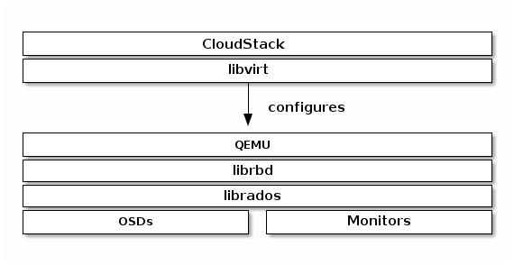

Block Devices and CloudStack¶
You may use Ceph Block Device images with CloudStack 4.0 and higher through libvirt, which configures the QEMU interface to librbd. Ceph stripes block device images as objects across the cluster, which means that large Ceph Block Device images have better performance than a standalone server!
To use Ceph Block Devices with CloudStack 4.0 and higher, you must install QEMU, libvirt, and CloudStack first. We recommend using a separate physical host for your CloudStack installation. CloudStack recommends a minimum of 4GB of RAM and a dual-core processor, but more CPU and RAM will perform better. The following diagram depicts the CloudStack/Ceph technology stack.

Important
To use Ceph Block Devices with CloudStack, you must have access to a running Ceph Storage Cluster.
CloudStack integrates with Ceph’s block devices to provide CloudStack with a back end for CloudStack’s Primary Storage. The instructions below detail the setup for CloudStack Primary Storage.
Note
We recommend installing with Ubuntu 14.04 or later so that you can use package installation instead of having to compile libvirt from source.
Note
Make sure the /tmp partition on your hypervisors is at least 25GB. When deploying from a template from the first time /tmp will be used for converting the template from QCOW2 to RAW for storage on RBD. This is no longer valid starting from CloudStack version 4.4.0
Note
To use RBD with CloudStack 4.4.0 you require at least librbd version 0.67.7 (Ceph Dumpling). Otherwise template deployments and template backups will fail. In case you use Ubuntu we recommend at least LTS version 14.04
Installing and configuring QEMU for use with CloudStack doesn’t require any special handling. Ensure that you have a running Ceph Storage Cluster. Install QEMU and configure it for use with Ceph; then, install libvirt version 0.9.13 or higher (you may need to compile from source) and ensure it is running with Ceph.
Note
Raring Ringtail (13.04) will have libvirt version 0.9.13 or higher with RBD storage pool support enabled by default.
Create a Pool¶
By default, Ceph block devices use the rbd pool. Create a pool for CloudStack NFS Primary Storage. Ensure your Ceph cluster is running, then create the pool.
ceph osd pool create cloudstack
See Create a Pool for details on specifying the number of placement groups for your pools, and Placement Groups for details on the number of placement groups you should set for your pools.
Create a Ceph User¶
To access the Ceph cluster we require a Ceph user which has the correct credentials to access the cloudstack pool we just created. Although we could use client.admin for this, it’s recommended to create a user with only access to the cloudstack pool.
ceph auth get-or-create client.cloudstack mon 'allow r' osd 'allow class-read object_prefix rbd_children, allow rwx pool=cloudstack'
Use the information returned by the command in the next step when adding the Primary Storage.
See User Management for additional details.
Add Primary Storage¶
To add primary storage, refer to Add Primary Storage (4.2.0) to add a Ceph block device, the steps include:
- Log in to the CloudStack UI.
- Click Infrastructure on the left side navigation bar.
- Select the Zone you want to use for Primary Storage.
- Click the Compute tab.
- Select View All on the Primary Storage node in the diagram.
- Click Add Primary Storage.
- Follow the CloudStack instructions.
- For Protocol, select RBD.
- Add cluster information (cephx is supported). Note: Do not include the client. part of the user.
- Add rbd as a tag.
Create a Disk Offering¶
To create a new disk offering, refer to Create a New Disk Offering (4.2.0). Create a disk offering so that it matches the rbd tag. The StoragePoolAllocator will choose the rbd pool when searching for a suitable storage pool. If the disk offering doesn’t match the rbd tag, the StoragePoolAllocator may select the pool you created (e.g., cloudstack).
Limitations¶
- CloudStack will only bind to one monitor (You can however create a Round Robin DNS record over multiple monitors)
- You may need to compile libvirt to use version 0.9.13 with Ubuntu.